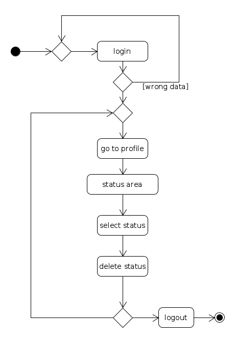
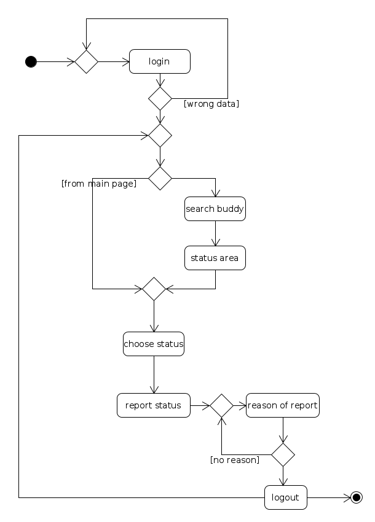
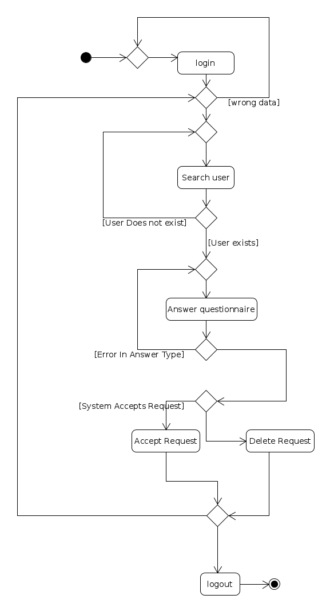
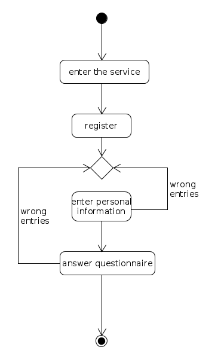
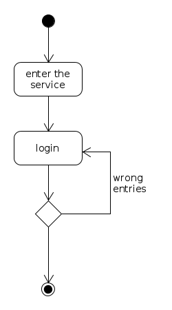
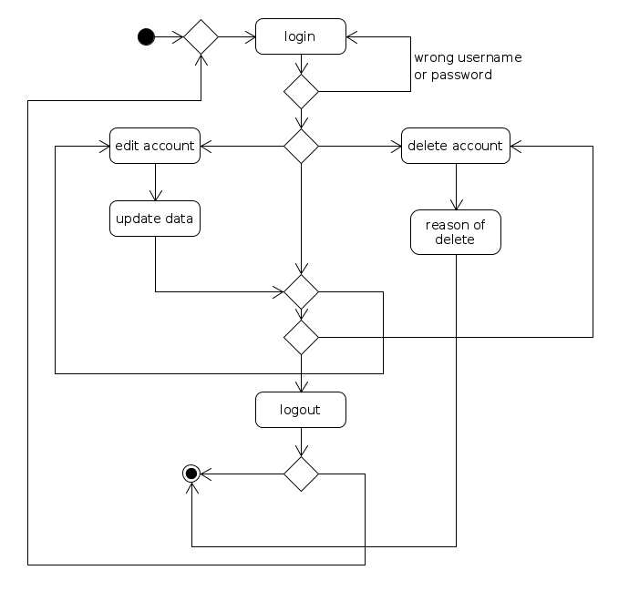

Σε αυτό το διάγραμμα ο χρήστης θέλει να σχολιάσει την κατάσταση κάποιου άλλου χρήστη ή τη δικιά του.
Αρχικά συνδέεται στην υπηρεσία (login) και στη συνέχεια διαλέγει αν θα σχολιάσει κατάσταση από την αρχική σελίδα ή από συγκεκριμένο χρήστη (search buddy). Και στις δύο περιπτώσεις καταλήγει να γράφει το σχόλιό του και ύστερα να επιλέγει αν θα σχολιάσει κάτι άλλο ή θα αποσυνδεθεί.

Σε αυτό το διάγραμμα ο χρήστης θέλει να ενημερώσει την κατάστασή του.
Αρχικά συνδέεται στην υπηρεσία (login) και στη συνέχεια διαλέγει αν θα ενημερώσει την κατάσταση από την αρχική σελίδα ή από την προσωπική του σελίδα. Και στις δύο περιπτώσεις πηγαίνει στην κατάλληλη περιοχή για ενημέρωση της κατάστασης και ενημερώνει την κατάστασή του. Ύστερα μπορεί είτε να αποσυνδεθεί είτε να ξαναενημερώσει την κατάσταση.

Σε αυτό το διάγραμμα ο χρήστης θέλει να διαγράψει μια από τις καταστάσεις του.
Αρχικά συνδέεται στην υπηρεσία (login) και στη συνέχεια διαλέγει μπαίνει στο προφίλ του όπου βλέπει όλες τις καταστάσεις του. Από εκεί διαλέγει ποια θέλει να διαγράψει και τη διαγράφει. Ύστερα επιλέγει αν θα διαγράψει άλλη κατάσταση ή θα αποσυνδεθεί.

Σε αυτό το διάγραμμα ο χρήστης θέλει να κάνει αναφορά σε μια από τις καταστάσεις του άλλου χρήστη.
Αρχικά συνδέεται στην υπηρεσία (login) και στη συνέχεια διαλέγει μια κατάσταση είτε από την αρχική σελίδα είτε από το προφίλ συγκεκριμένου χρήστη (search buddy). Ύστερα κάνει αναφορά αυτής της κατάστασης και καλείται να ακόμα να δώσει τον λόγο της αναφοράς. Μόλις το κάνει επιλέγει αν θα αναφέρει άλλη κατάσταση ή θα αποσυνδεθεί.

Σε αυτό το διάγραμμα ο χρήστης μπορεί να στέλνει αιτήματα για να προσθέσει κάποιον ως buddy και το σύστημα απαντάει.
Αρχικά συνδέεται στην υπηρεσία (login), αναζητάει τον χρήστη που θέλει να προσθέσει, αν υπάρχει απαντάει σε ένα ερωτηματολόγιο , αν δεν υπάρχει αναζητάει διαφορετικό χρήστη. Το σύστημα ελέγχει τις απαντήσεις και αποφασίζει αν οι δύο χρήστες γίνουν Buddies. Ο χρήστης μπορεί να επαναλάβει την διαδικασία προσθήκης διαφορετικού χρήστη ή να αποσυνδεθεί από την υπηρεσία(Logout).

Σε αυτο το διαγραμμα ο χρηστης δημιουργει εναν νεο λογαριασμο.
Αρχικα εισαγει τα προσωπικα του δεδομενο και επειτα απανταει στο ερωτηματολογιο.

Σε αυτο το διαγραμμα ο χρηστης συνδεεται στην υπηρεσια με τον λογαριασμο του.

Σε αυτο το διαγραμμα ο χρηστης αρχικα συνδεεται στην υπηρεσια.Επειτα διαλεγει εαν θελει να επεξεργαστει το προφιλ του ή να το διαγραψει.Ο χρηστης μπορει να επεξεργαστει το προφιλ του οσες φορες επιθυμει ή να το διαγραψει μετα απο καποια επεξεργασια.Τελος ο χρηστης αποσυνδεεται απο την υπηρεσια.